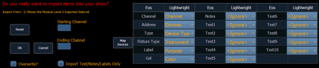
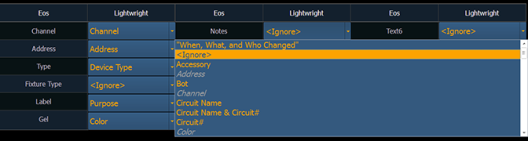
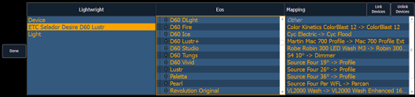

Once a file has been selected for import, you will now have options for importing.

Note: {Import Text/Notes/Labels Only} allows you to import just the patch database text.
You can select to either merge the data with the current show file, or to overwrite the data in the current file. To do this, check the {Overwrite} box. Leaving this box unchecked will merge the data.
You can select starting and ending channels for the import.
You can map Element patch fields to fields in the Lightwright file. Channel and Address must be mapped for the file import to work. Any other field can be set to ignore if desired. Once a Lightwright field has been mapped, it will display in grey in the dropdown menu. However, greyed out options can be selected again for placement in multiple fields.

The text fields in the Patch display and database will rename based off of the Lightwright imported fields. See Renaming Text Fields in Patch for more information.
Note: Element does not currently support multiple gels per fixture from Lightwright.
Element will accept mulitple address formats for importing. Examples of those formats are 2/3, 2.3, 2,3, 2-3. Element will convert all formats to n/n.
Devices can also be mapped. Click {Map Devices} to open the following display.

Select the Lightwright device and the match from the Eos column. Multiple Lightwright devices can be selected at a time. Then click {Link Devices}. The link will appear in the Mapping column. To unlink a device, select it from the Mapping column, and then press {Unlink Device}.
Device mapping and import fields are saved with the show file.